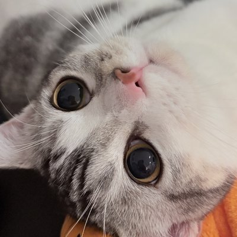

Li Youxing
MSc @ CUHK | Email = rickliyouxing [at] link.cuhk.edu.hk
Hi! I received my MSc in Advanced Statistics and Data Science from The Chinese University of Hong Kong in 2026. Before that, I received my BSc in Data Science from Xi'an Jiaotong University. I am a Research Assistant in the MHUG lab at the University of Trento, supervised by Prof. Nicu Sebe and Ziheng Chen.
Research: My research focuses on LLMs, vision-language models and agentic RL: models that keep improving from experience they generate themselves, and multimodal agents that act over many steps. I also work on geometric deep learning on SPD and correlation matrices.
News
- Oct 2026arXivOur technical report A-RSI is on arXiv and ranked #3 on Hugging Face Daily Papers!
- Oct 2026arXivMy sole-author preprint Decide Before You Look is now available on arXiv.
- Jul 2026MScGraduated from The Chinese University of Hong Kong with an MSc in Advanced Statistics and Data Science.
- Jun 2026IndustryJoined Xiaomi as project lead of A-RSI.
- Apr 2026arXivOur survey The Latent Space is now available on arXiv.
- Feb 2025ResearchJoined the MHUG lab at the University of Trento as a Research Assistant.
Selected Publications
* equal contribution § project lead † corresponding author
- Tech Report·2026★ #3 on Hugging Face Daily Papers
A-RSI: Adaptive Task Refresh for Zero-Data Multimodal Self-Improvement
Yu Liu*, Youxing Li*§, Yuedong Tan*, Zhiwei Yang, Zihan Su, Hanqi Feng, Shaojie Zhang, Libin Liao, Zihao Wan, Chenxu Wu, Cong Cao†, Fangfang Yuan, Yanbing Liu, Ziheng Chen, Pei Fu†, Radu Timofte, Zongwei Wu, Nicu Sebe, Barnabas Poczos, Jian Luan
Refreshes the training task pool when the model's own training logs show the learning signal has faded. With no external data, it improves Qwen3-VL-8B on all 11 benchmarks (57.77 → 61.05 on average).
- Under Review·2026
Structural Entropy Guided Capability-Aware Expert Routing
Zhiwei Yang*, Yu Liu*, Youxing Li*, Yuedong Tan, Haimei Qin, Shaojie Zhang, Lei Jiang, Yanbing Liu, Pei Fu
Routes each query to one LLM from a heterogeneous expert pool, using structural-entropy candidate sets and a GRPO-trained planner and selector. Evaluated on 20 benchmarks.
- Under Review·2026
Beyond Task Success: A Tool-Use Agent Efficiency Benchmark
Yu Liu, Yuedong Tan, Zhilin Liu, Zhiwei Yang, Hanqi Feng, Wenxiao Zhang, Zheyuan Deng, Kunyu Peng, Radu Timofte, Youxing Li, et al.
191 multimodal long-horizon tasks, each with an evidence graph, scoring 27 frontier models on final correctness together with evidence acquisition.
- Under Review·2026
GCorP: Global Correlation Pooling
Youxing Li, Zihan Su, Nicu Sebe, Ziheng Chen†
Pools scale-invariant correlation matrices with flat and hyperbolic heads. Validated on image classification, EEG foundation models, and FD-loss post-training of image generators.
- Under Review·2026
Riemannian Sliced-Wasserstein Distances on Correlation Matrices
Youxing Li, Nicu Sebe, Ziheng Chen†
Sliced-Wasserstein regularization on full-rank correlation matrices, covering four flat pullback metrics and a hyperbolic branch at O(d2) projection cost.
- Under Review·2026
A Riemannian Framework for Normalized SPD Matrix Learning
Youxing Li, Ziheng Chen†
Deformed-Euclidean Metrics on normalized SPD matrices with closed-form Riemannian operators and eigendecomposition-free approximations. Gains in visual recognition, Riemannian classification, and fMRI generation.
- arXiv·2026
Decide Before You Look: Learning Which Retrieved Memories Deserve Pixels
Youxing Li
Predicts which retrieved image memories are worth sending as pixels before the answering model runs, cutting visual tokens to 11–23% without accuracy loss on three benchmarks.
- arXivSurvey·2026
The Latent Space: Foundation, Evolution, Mechanism, Ability, and Outlook
Xinlei Yu, Zhangquan Chen, Yongbo He, Tianyu Fu, Guanting Dong, …, Youxing Li, …, Yu-Gang Jiang, Shuicheng Yan
A survey of latent space in language-based models, organized by foundation, evolution, mechanism, ability, and outlook.
Education
Hong Kong
Jinhe Center · Xi'an, China
Research Experience
-
XiaomiJun 2026 – PresentProject Lead, A-RSILed A-RSI, zero-data multimodal self-improvement with adaptive task refresh, and contributed to LLM expert routing (SEER).
-
University of TrentoFeb 2025 – PresentResearch Assistant, MHUG Lab, supervised by Prof. Nicu Sebe and Ziheng ChenGeometric deep learning on SPD and correlation matrices.
Outside research, I love hitting the gym 🏋️, love music 🎧, and love playing the drums 🥁. Always up for a chat about any of them!